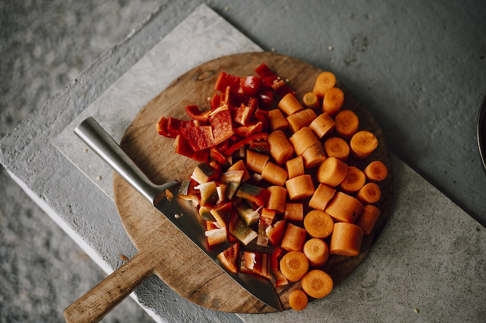
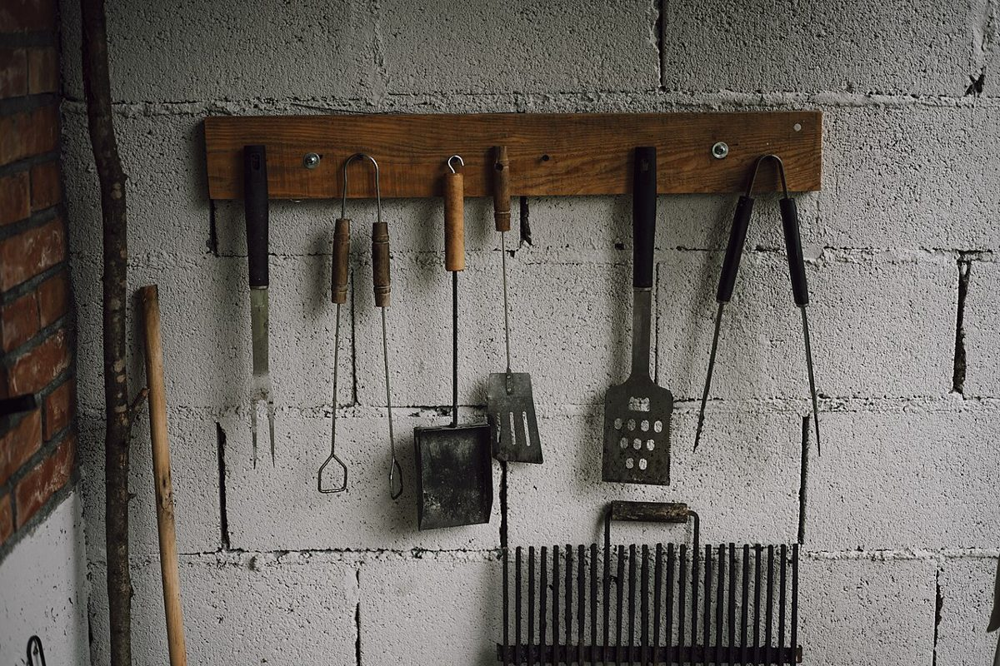

プログラム解説
お店のこと
確認できているのは、所在地・電話番号・Instagramのアカウントだけです。
このページの「想像してみる」部分は、制作側が想像して書いたものです。お店の実際の様子・考え・メニューとは関係がありません。
確認できていること
- 店名は「カフェとごはん ひだまり」、業種はカフェ・ごはん
- 所在地は滋賀県近江八幡市鷹飼町１３７６−３(〒523-0891)
- 電話番号は 0748-43-2602
- Instagramのアカウントは @hidamari_cafebistro
- 営業時間・定休日・メニュー・価格・ご予約・駐車場は準備中

想像してみる
二本立てのプログラムとして
お店の由来は分かりません。制作側は、名前の「カフェ」と「ごはん」を、1本目と2本目の作品に見立てて並べてみました。写真はどれも、国外または撮影地不明のフリー素材で、お店のものではありません。

